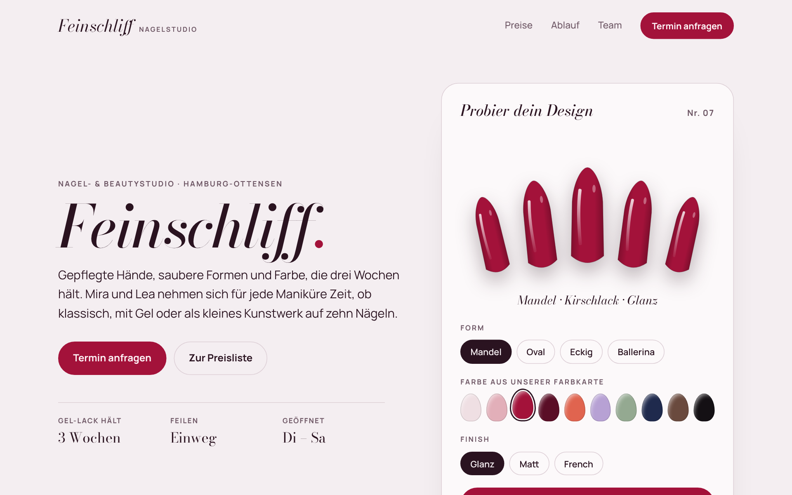
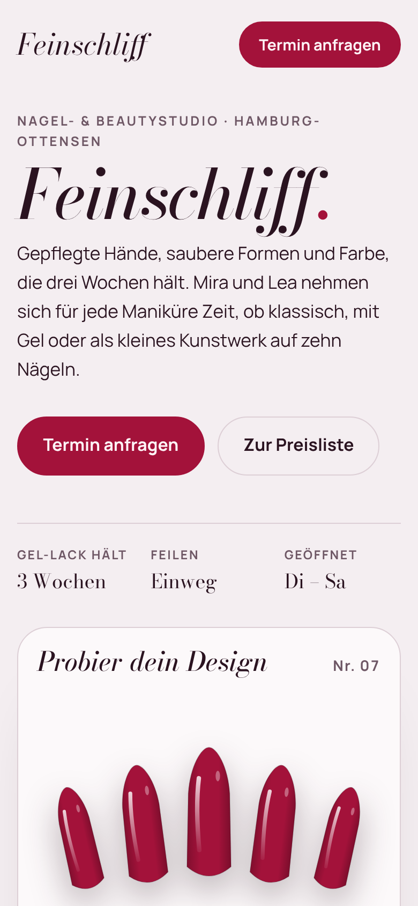
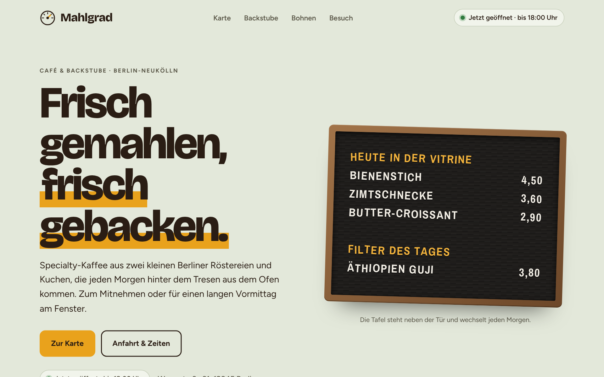
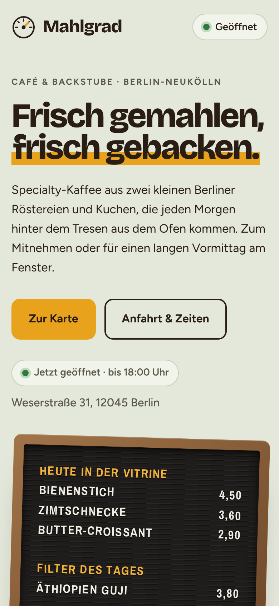
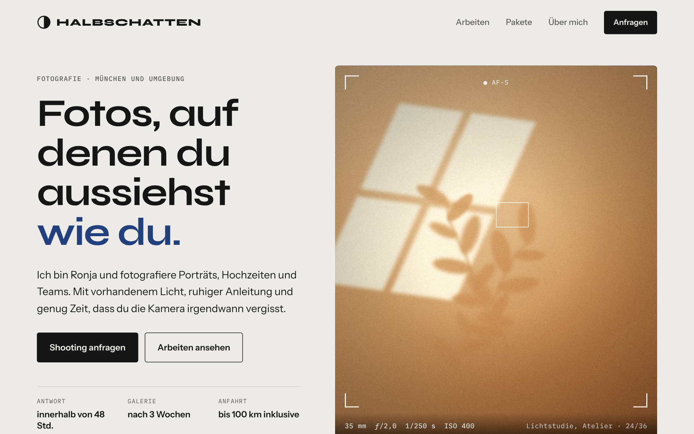
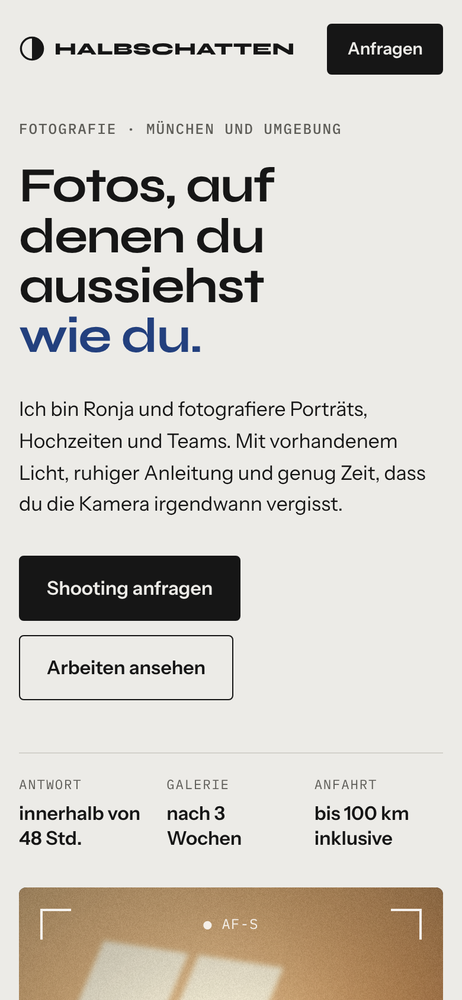
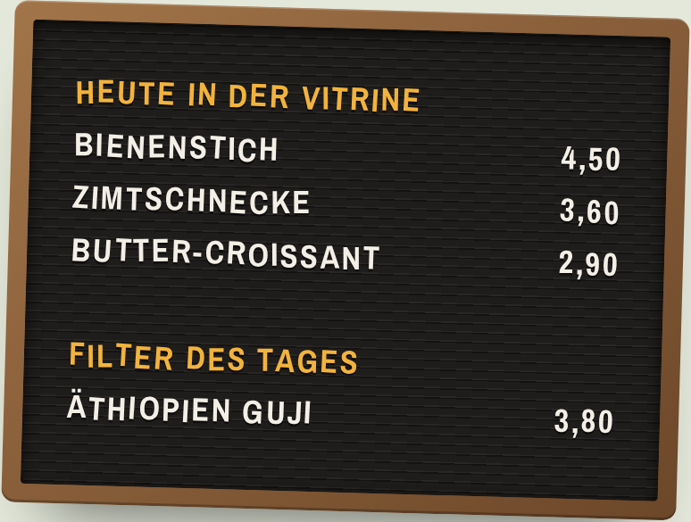
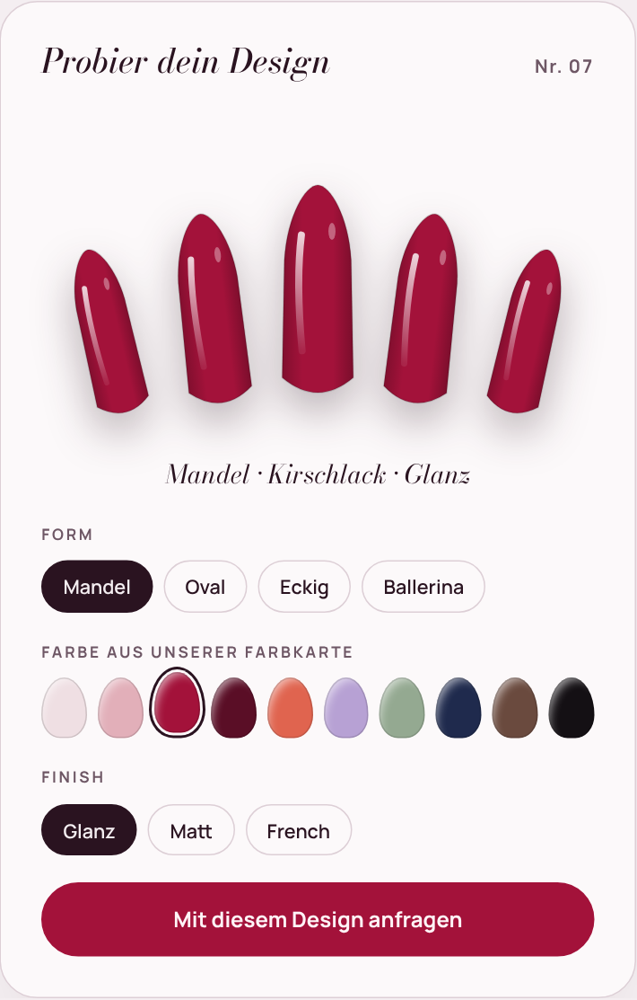

Für Nagelstudios, Cafés, Fotograf:innen und alle Läden um die Ecke. Schön, schnell und gemacht fürs Handy.
Nagel- & Beautystudio, Hamburg-Ottensen


Café & Backstube, Berlin-Neukölln


Porträt- & Hochzeitsfotografie, München



Wochentag + Uhrzeit → „Jetzt geöffnet“. Ganz ohne Pflege.

4 Formen · 10 Farben · 3 Finishes → direkt in die Terminanfrage
Super! Aber wer bei Google nach „Café in der Nähe“ sucht, landet auf Websites und nicht in deinen Stories.
Instagram + Website = bestes Team